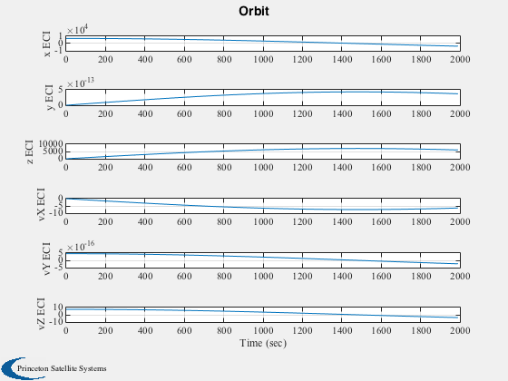
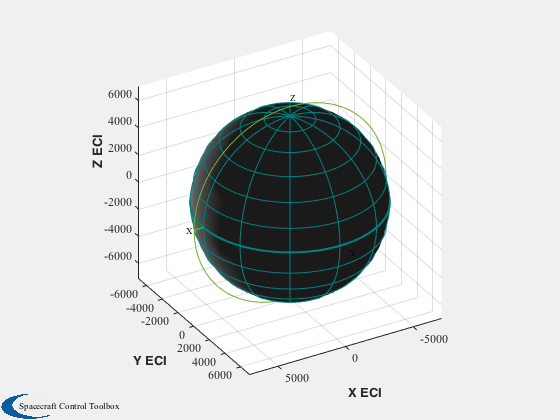
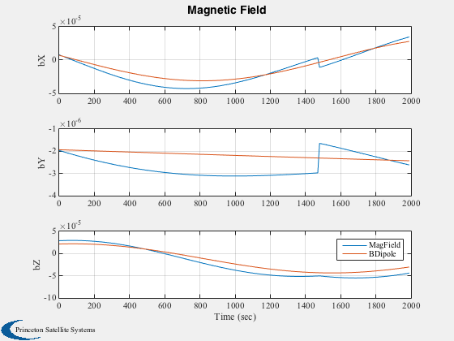

Test the magnetic field.
Compares the results of MagField and BDipole in a polar orbit.
------------------------------------------------------------------------
See also Plot2D, JD2000, PltOrbit, RVFromKepler, BDipole,
MagField
------------------------------------------------------------------------
Contents
Number of sim steps
nSim = 200;
dTSim = 10;
Magnetic field
magFieldData = load('MagData');
Generate the orbit
timeOrbit = (0:(nSim-1))*dTSim;
el = [a,i,W,w,e,M]
el = [6718+352 pi/2 0 0 0 0];
[r, v] = RVFromKepler( el, timeOrbit );
jD = JD2000;
Preallocate the array
bPlot = zeros(3,nSim);
dPlot = zeros(3,nSim);
Run the simulation
for k = 1:nSim
bPlot(:,k) = MagField( r(:,k), jD, 2, magFieldData );
dPlot(:,k) = BDipole( r(:,k), jD );
jD = jD + dTSim/86400;
end
Plotting
xLbl = 'Time (sec)';
Plot2D( timeOrbit, [r;v], xLbl,['x ECI ';'y ECI ';'z ECI ';'vX ECI';'vY ECI';'vZ ECI'],'Orbit')
PltOrbit( el, jD )
Plot2D( timeOrbit, [bPlot;dPlot], xLbl,['bX ';'bY ';'bZ '],'Magnetic Field','lin',['[1 4]';'[2 5]';'[3 6]'])
legend('MagField','BDipole')
ans =
Figure (PlotPSS) with properties:
Number: 2
Name: 'Earth Orbit'
Color: [0.94 0.94 0.94]
Position: [440 378 560 420]
Units: 'pixels'
Use GET to show all properties
  